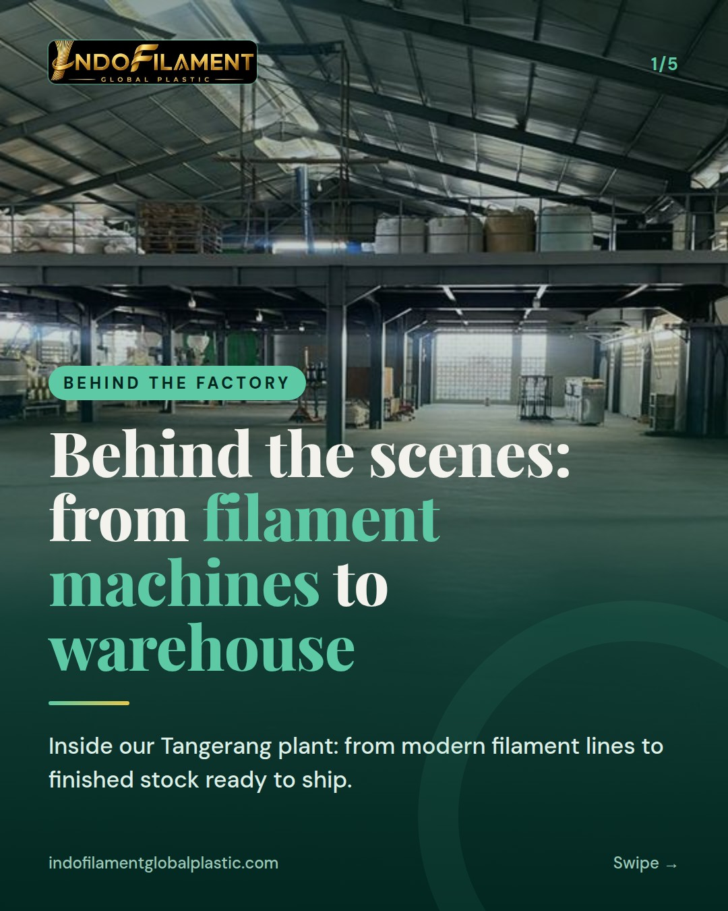
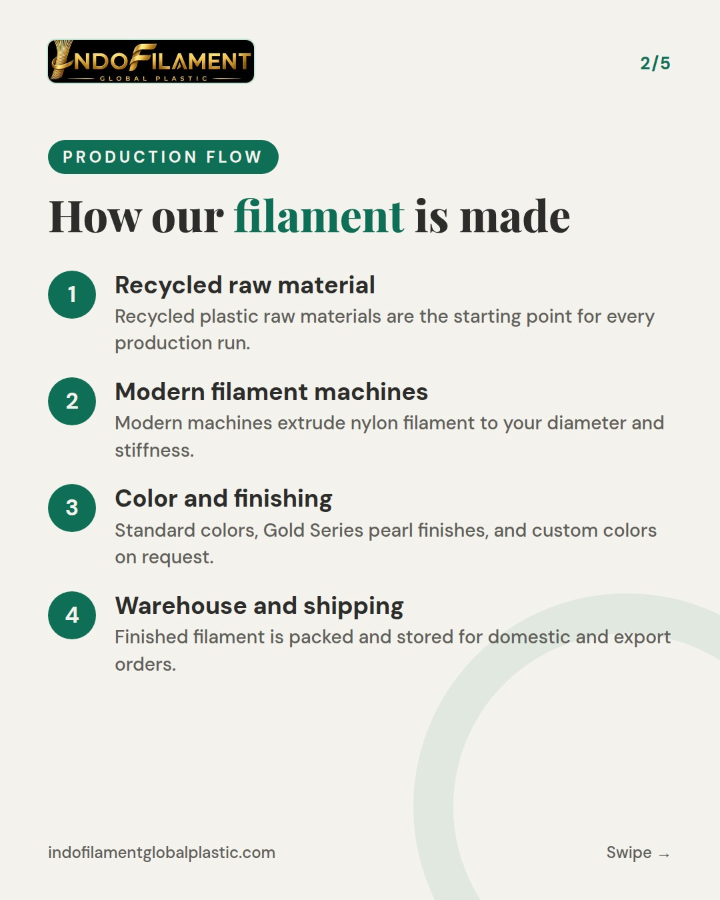
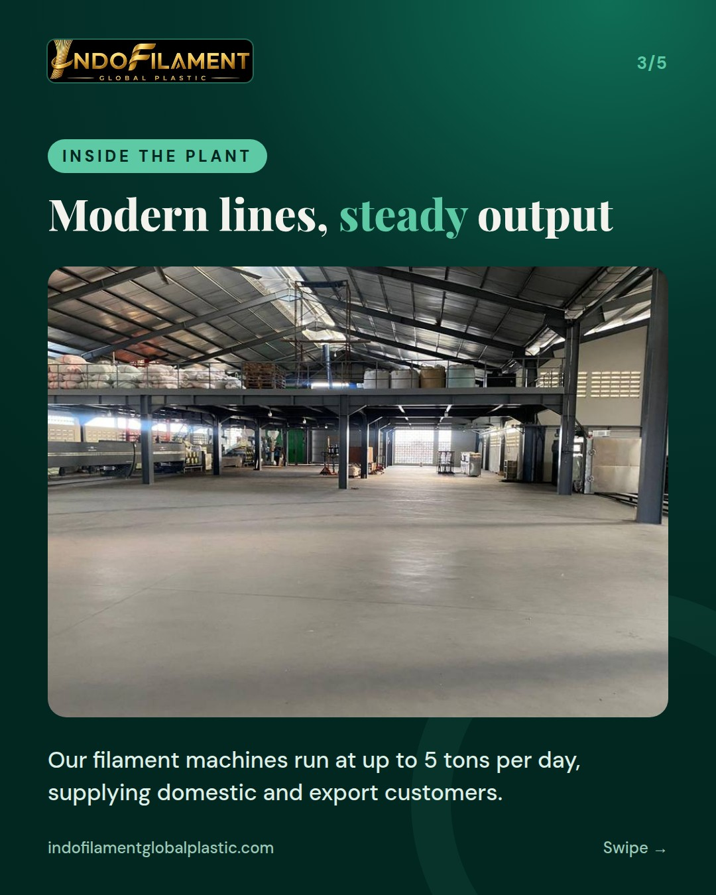
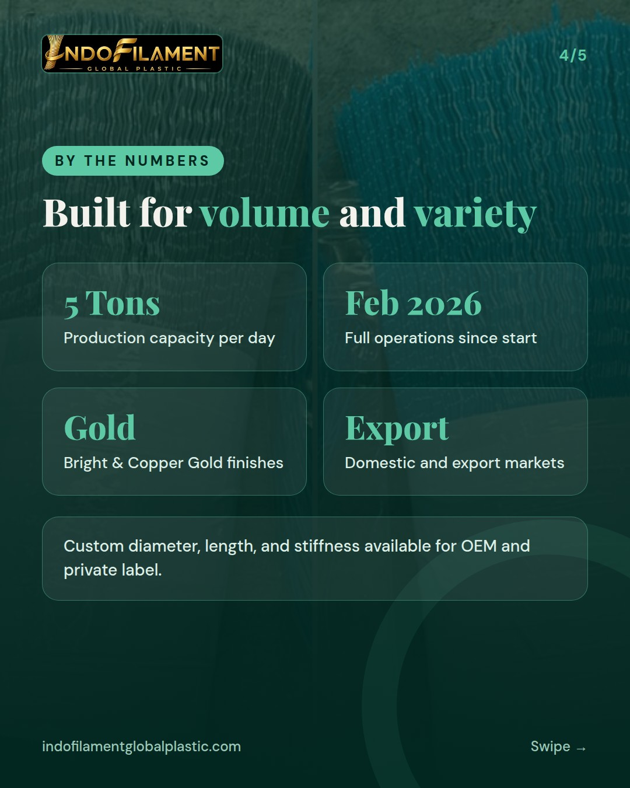
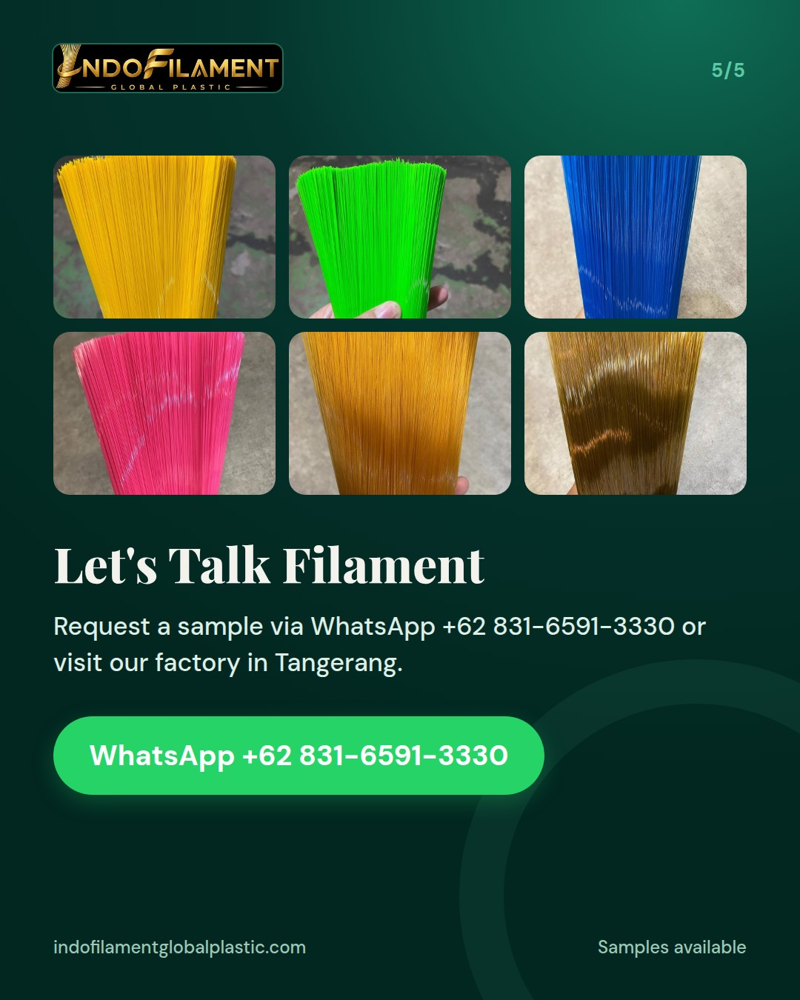

Di balik layar pabrik: dari mesin filamen ke gudang





Ever wondered what happens before a broom or brush reaches the shelf? 🏭 Here is a look behind the scenes at PT Indofilament Global Plastic in Tangerang, Banten. Our process starts with recycled plastic raw materials, which are turned into nylon filament on modern filament machines. Each run can be adjusted to your needs, from diameter and length to stiffness and color. We offer standard colors such as yellow, green, blue, and pink, plus Gold Series finishes in Bright Gold and Copper Gold. Custom colors are available on request. Once produced, filament moves to our warehouse, where it is organized and prepared for domestic and export orders. With production capacity of up to 5 tons per day, we support broom and brush manufacturers, distributors, and importers who need a reliable supply. Whether you need standard filament or a custom OEM or private label solution, our team is ready to help you find the right match. Request a sample via WhatsApp +62 831-6591-3330 or DM us. Factory visits are welcome too. 🧹✨ #broomfilament #brushfilament #nylonfilament #broommanufacturer #madeinindonesia #privatelabel #OEM #goldseries